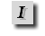

|
Betûtípus: A gomb megnyomásával az aktuális kurzorpozícióra a
<FONT></FONT> elemeket illeszti be a
Globe és a kurzort a nyitó és záró elem közé helyezi. Amennyiben további opciókat kívánsz megadni a FONT elemre vonatkozóan, menj vissza a HTML kezdõ elem > jele
elé és nyomj egy szóköz billentyût. A Globe segíteni fog neked a paraméterezésben. Errõl a funkcióról bõvebben a Segédlet menüpont alatt olvashatsz.
|
![[ Font + ]](pic/fplus_button.gif) |
Méret növelés: A gomb megnyomásával az aktuális kurzorpozícióra a
<FONT SIZE="+1"></FONT> elemet illeszti be a
Globe és a kurzort a nyitó és záró elem közé helyezi. Az elemek közé írt szöveg méretét az általánosan meghatározott betûmérethez képest egy egységgel növeli. Amennyiben további opciókat kívánsz megadni, úgy menj vissza a HTML kezdõ elem > jele
elé és nyomj egy szóköz billentyût. A Globe segíteni fog neked a paraméterezésben. Errõl a funkcióról bõvebben a Segédlet menüpont alatt olvashatsz.
|
![[ Font - ]](pic/fmin_button.gif) |
Méret csökkentés: A gomb megnyomásával az aktuális kurzorpozícióra a
<FONT SIZE="-1"></FONT> elemet illeszti be a
Globe és a kurzort a nyitó és záró elem közé helyezi. Az elemek közé írt szöveg méretét az általánosan meghatározott betûmérethez képest egy egységgel csökkenti. Amennyiben további opciókat kívánsz megadni, úgy menj vissza a HTML kezdõ elem > jele
elé és nyomj egy szóköz billentyût. A Globe segíteni fog neked a paraméterezésben. Errõl a funkcióról bõvebben a Segédlet menüpont alatt olvashatsz.
|
![[ Bold ]](pic/bold_button.gif) |
Kövér betû: A gomb megnyomásával az aktuális kurzorpozícióra a
<B></B> elemet illeszti be a
Globe és a kurzort a nyitó és záró elem közé helyezi. Az elemek közé írt szöveg kövér, vagy másnéven vastagon szedetté válik. Ha kijelölsz egy szövegrészletet és ekkor nyomod meg a B gombot, úgy a kijelölt
szövegrész elejére és végére helyezi el a kezdõ és lezáró elemeket. Amennyiben további opciókat kívánsz megadni, úgy menj vissza a HTML kezdõ elem > jele
elé és nyomj egy szóköz billentyût. A Globe segíteni fog neked a paraméterezésben. Errõl a funkcióról bõvebben a Segédlet menüpont alatt olvashatsz.
|
|  |
Dõlt betû: A gomb megnyomásával az aktuális kurzorpozícióra a
<I></I> elemet illeszti be a
Globe és a kurzort a nyitó és záró elem közé helyezi. Az elemek közé írt szöveg döntött betûkkel lesz szedve. Ha kijelölsz egy szövegrészletet és ekkor nyomod meg az I gombot, úgy a kijelölt
szövegrész elejére és végére helyezi el a kezdõ és lezáró elemeket. Amennyiben további opciókat kívánsz megadni, úgy menj vissza a HTML kezdõ elem > jele
elé és nyomj egy szóköz billentyût. A Globe segíteni fog neked a paraméterezésben. Errõl a funkcióról bõvebben a Segédlet menüpont alatt olvashatsz.
|
![[ Strong ]](pic/s_button.gif) |
STRONG: A gomb megnyomásával az aktuális kurzorpozícióra a
<STRONG></STRONG> elemet illeszti be a
Globe és a kurzort a nyitó és záró elem közé helyezi. Használata megegyezik a B gombéval.
|
![[ Emphasis ]](pic/em_button.gif) |
Idézet: A gomb megnyomásával az aktuális kurzorpozícióra a
<EM></EM> elemet illeszti be a
Globe és a kurzort a nyitó és záró elem közé helyezi. Az elemek közé írt szöveg dõlt szedéssel jelenik meg. Használata megegyezik az I gombéval.
Az<EM></EM> elemek használatának eredménye: Próba szöveg
|
![[ Preformatted ]](pic/pre_button.gif) |
Elõre formázott szöveg: A gomb megnyomásával az aktuális kurzorpozícióra a <PRE></PRE> elemet illeszti be a
Globe és a kurzort a nyitó és záró elem közé helyezi. Az elemek közé írt szöveg pontosan olyan formában jelenik meg, olyan sortöréssel, ahogyan azt Te megszabtad.
Az<PRE></PRE> elemek használatának eredménye:
Mutshuhito császár
Víz
Ha korsóm öblét csöndbe lakja,
a korsóhoz simul alakja.
De mégis a víz az erõs.
Õtõle robban szét az õs
kõszirt évezredes alapja.
|
|
Címsor 1: A gomb megnyomásával az aktuális kurzorpozícióra a
<H1></H1> elemet illeszti be a
Globe és a kurzort a nyitó és záró elem közé helyezi. Az elemek közé írt szöveg így jelenik meg:
Címsor 1
|
|
Címsor 2: A gomb megnyomásával az aktuális kurzorpozícióra a
<H2></H2> elemet illeszti be a
Globe és a kurzort a nyitó és záró elem közé helyezi. Az elemek közé írt szöveg így jelenik meg:
Címsor 2
|
![[ H3 ]](pic/h3_button.gif) |
Címsor 3: A gomb megnyomásával az aktuális kurzorpozícióra a
<H3></H3> elemet illeszti be a
Globe és a kurzort a nyitó és záró elem közé helyezi. Az elemek közé írt szöveg így jelenik meg:
Címsor 3
|
![[ SUB ]](pic/sub_button.gif) |
Alsó szedés: A gomb megnyomásával az aktuális kurzorpozícióra a
<SUB></SUB> elemet illeszti be a
Globe és a kurzort a nyitó és záró elem közé helyezi. Az elemek közé írt szöveg így jelenik meg:
Normál szöveg subbal szedett szöveg
|
![[ SUP ]](pic/sup_button.gif) |
Felsõ szedés: A gomb megnyomásával az aktuális kurzorpozícióra a
<SUP></SUP> elemet illeszti be a
Globe és a kurzort a nyitó és záró elem közé helyezi. Az elemek közé írt szöveg így jelenik meg:
Normál szöveg suppal szedett szöveg
|
![[ Globe Webeditor ]](pic/menu_top.jpg)
![[ Ismertetõ ]](pic/menu_hu_01.jpg)
![[ Segédlet ]](pic/menu_hu_02.jpg)
![[ Elõzmény ]](pic/menu_hu_03.jpg)
![[ Letöltés ]](pic/menu_hu_04.jpg)
![[ Képek ]](pic/menu_hu_05.jpg)
![[ Fórum ]](pic/menu_hu_06.jpg)
![[ Kapcsolat ]](pic/menu_hu_07.jpg)
![[ Bottom ]](pic/menu_bottom.jpg)
![[ Globe Webeditor Ismertetõ ]](pic/top_hu_01.jpg)